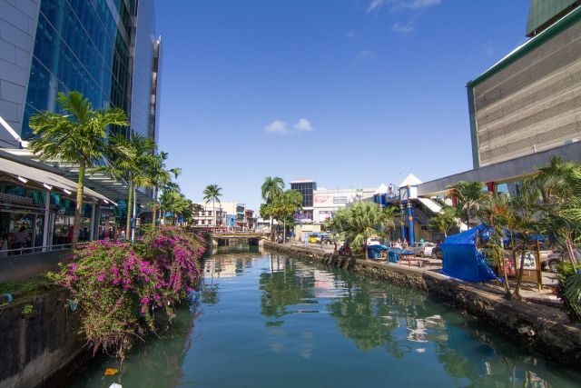
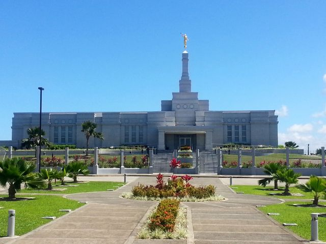

Suva is the capital city of Fiji, located on the southeast coast of Viti Levu, the largest island in the archipelago. It is known for its vibrant culture, beautiful parks, and stunning waterfront. The city is a hub for government, commerce, and education in Fiji. Visitors can explore the Fiji Museum, enjoy local markets, and experience the rich history and traditions of the Fijian people. Suva is also a gateway to other beautiful destinations in Fiji, making it a popular starting point for travelers.
(fig1.5)This is one of the rivers that pass through the inner part of the Suva city. To the left is MHCC a major supermarket in Fiji.
(fig1.6)This is the Suva Fiji Temple, a 10 minutes walk from my home.
